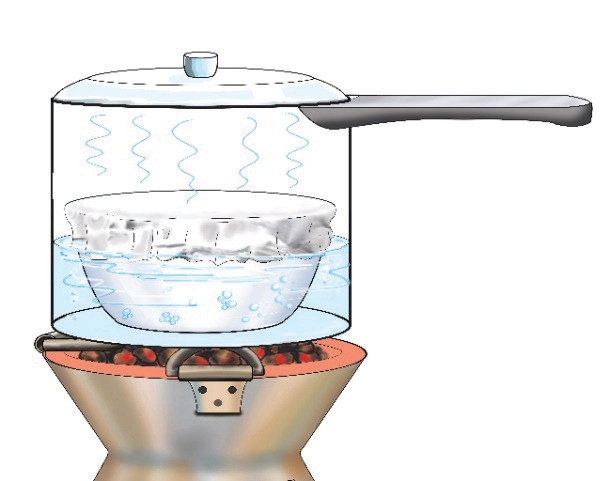
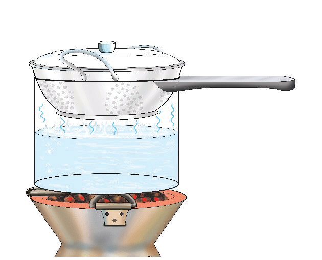

Steaming using a colander: This steaming method involves using a perforated utensil, namely a colander. It is a kitchen utensil that is used to steam various foods. A covered colander is used to hold food and then placed on a cooking pan with boiling water, as shown in Figure 4.21. The colander should fit well on the cooking pan. Its base should not come in direct contact with the boiling water.

Steaming using a food steamer: A food steamer is a kitchen appliance used to cook food by exposing it to steam. It has a base that heats water to produce steam. It also has compartments where the food to be steamed is placed. In this method, the steam from the water goes upwards through perforated vessels of the steamer when one is cooking food. A food steamer can cook several foods at the same time as shown in Figure 4.22.